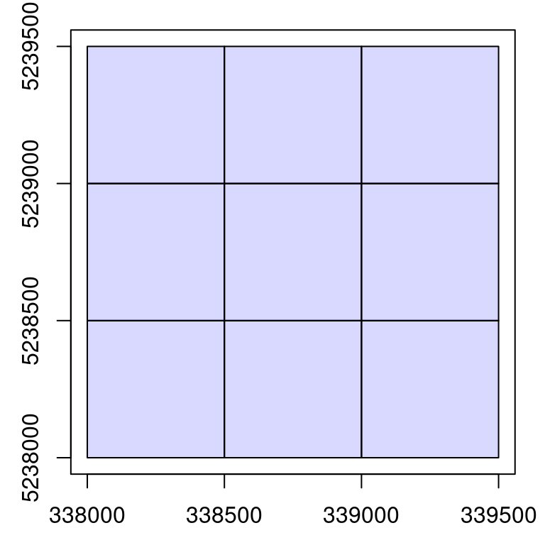
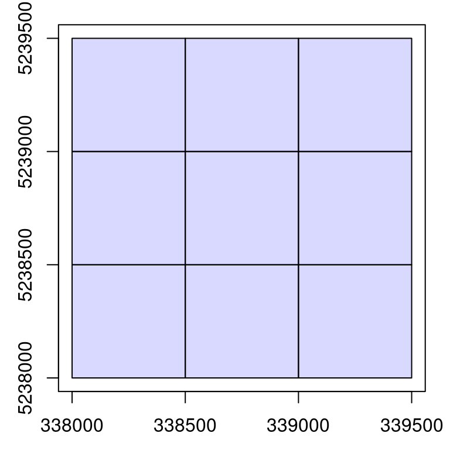
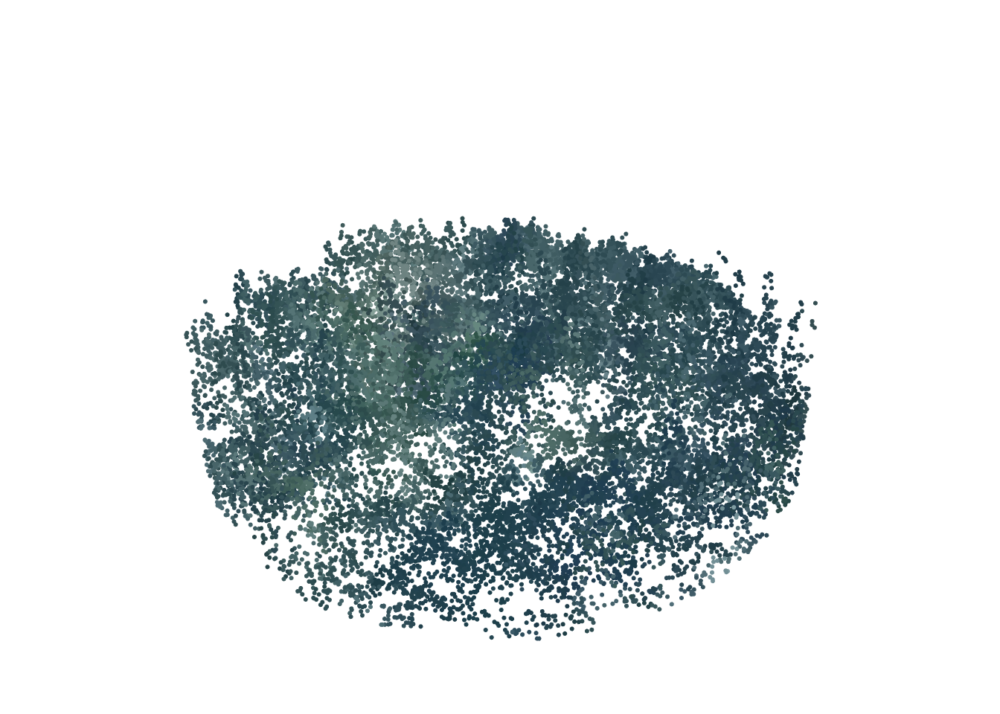
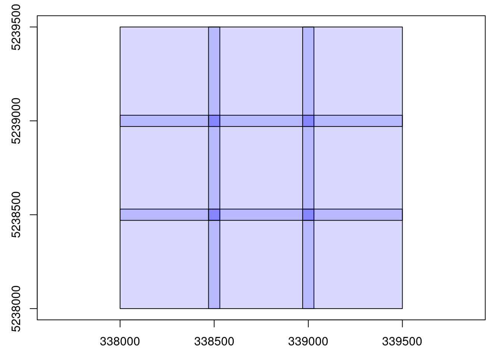
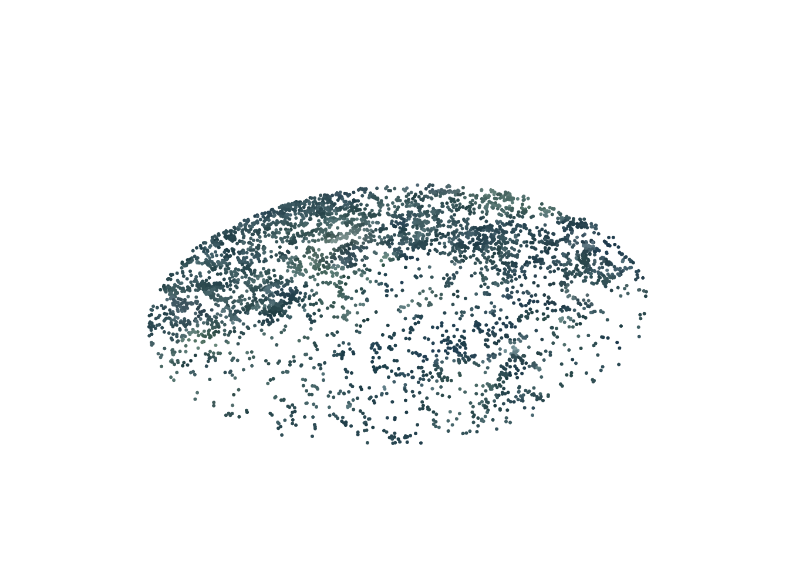

ctg <- readLAScatalog("data/ENGINE/catalog/")
plot(ctg)
Chapter 14 showed how to use the LAScatalog processing engine to apply lidR functions on a collection of files. This included how to process acquisitions in user defined chunk sizes, loading buffers on-the-fly, saving the output to disk, and parallelizing tasks. These examples all used existing functions provided with the lidR package. The power of the engine goes beyond limited used cases, allowing developers to design their own applications.
Let’s imagine we want to normalize a data set and colorize it using RGB aerial data. According to the previous sections we could do something like this:
opt_output_files(ctg) <- paste0(tempdir(), "/{*}_normalized") # specify output normalized las disk save location
ctg_norm <- normalize_height(ctg, tin()) # normalize
# loop through catalog files and apply rgb colour
rgb <- terra::rast("rgb.tif")
for (file in ctg$filename)
{
newname <- tools::file_path_sans_ext(basename(file))
newname <- paste0("folder/", newname, "_colored.laz")
las <- readLAS(file)
las <- merge_spatial(las, rgb)
writeLAS(las, newname)
}This method is however far from optimal. First, the whole point cloud is read two times:
This takes a significant amount of time. It also implies the need to create copies of the acquisition after each processing step, taking up a lot of disk storage. Then, to finish, a custom for loop is used because merge_spatial() cannot be applied on a LAScatalog natively.
What if we were able to do that in a single run?
catalog_apply()In this section we outline the catalog_apply() function, which is used subliminally in every function seen in the Chapter 14. Here we show how to leverage its versatility to design tools that do not yet exist, like the normalization + colorization example from above, but also more innovative processes.
Again, the LAScatalog class and the LAScatalog engine are deeply documented in a two dedicated vignettes available here and here. The purpose of these examples is to provide alternative, hands-on documentation with more applied examples and real use cases.
In this section we will use the same 9 files used in Chapter 14 and an RGB raster that encompasses the collection of files.
ctg <- readLAScatalog("data/ENGINE/catalog/")
plot(ctg)
The RGB image is available for download here.
rgbmap <- terra::rast("data/ENGINE/catalog/rgb.tif")
terra::plotRGB(rgbmap)
First we need to create a function that combines the normalization + colorization steps. Let’s call it norm_color(). It’s simple and uses only 2 functions.
norm_color <- function(las, rgbmap) # create user-defined function
{
nlas <- normalize_height(las, tin()) # normalize
colorized <- merge_spatial(nlas, rgbmap) # colorize
return(colorized) # output
}Let’s try it on a sample plot.
las <- clip_circle(ctg, 338800, 5238500, 40)
nlasrgb <- norm_color(las, rgbmap) # apply user defined function
plot(nlasrgb, color = "RGB", bg = "white", size = 6) # some plotting
It works! We have a workable function that performs on a point cloud. Remember that norm_color() is just an example. You could instead choose to make an algorithm for individual tree detection or a method to sample point of interest, let your imagination run wild!
So far it works only when using a LAS object. Now let’s make it working with a LAScatalog.
catalog_apply()The simple way is:
new_ctg <- catalog_map(ctg, norm_color, rgbmap = rgbmap)However, here we will learn the hard way in order to understand better how it works internally and understand the full potential of catalog_apply() for which catalog_map() is only a simplified version.
The core engine is the function catalog_apply() but this function does not work with any user-defined function. User-defined functions must respect a specific template (take a look at the documentation in R) and is expected to perform some specific tasks. First, the primary variable must be a chunk from the catalog (see chunk below), the function must read the chunk, check that it is not empty, then perform the computation.
A valid function is the following:
norm_color_chunk <- function(chunk, rgbmap) # user defined function
{
las <- readLAS(chunk) # read the chunk
if (is.empty(las)) return(NULL) # check if it actually contain points
nlasrgb <- norm_color(las, rgbmap) # apply computation of interest
return(nlasrgb) # output
}This introduces an additional level of complexity that is crucial. First, catalog chunks will be sequentially fed into the user’s function. Each chunk is read inside the user-defined function with all processing options being automatically respected (filter, select, chunk_size, chunk_buffer etc.). The las variable in the code snippet above is a point cloud extracted from the catalog that contains the chunks + a buffer. It’s important to check that the loaded portion of the collection is not empty or subsequent code will likely fail. This may happen depending on the size of the chunk and the filter options chosen.
This function is now catalog_apply() compatible and can be applied over the entire ALS acquisition. The output will be a point cloud, so we need to pay attention mitigate memory issues and save to disk. At this stage, we haven’t mitigated that problem yet so we add it below.
opt_output_files(ctg) <- paste0(tempdir(), "/{*}_norm_rgb") # write to disk
output <- catalog_apply(ctg, norm_color_chunk, rgbmap = rgbmap) # implement user-defined function using catalog_apply
str(output)
#> List of 9
#> $ : chr "/tmp/RtmpTQwSlm/tiles_338000_5238000_1_norm_rgb.las"
#> $ : chr "/tmp/RtmpTQwSlm/tiles_338000_5238500_1_norm_rgb.las"
#> $ : chr "/tmp/RtmpTQwSlm/tiles_338000_5239000_1_norm_rgb.las"
#> $ : chr "/tmp/RtmpTQwSlm/tiles_338500_5238000_1_norm_rgb.las"
#> $ : chr "/tmp/RtmpTQwSlm/tiles_338500_5238500_1_norm_rgb.las"
#> $ : chr "/tmp/RtmpTQwSlm/tiles_338500_5239000_1_norm_rgb.las"
#> $ : chr "/tmp/RtmpTQwSlm/tiles_339000_5238000_1_norm_rgb.las"
#> $ : chr "/tmp/RtmpTQwSlm/tiles_339000_5238500_1_norm_rgb.las"
#> $ : chr "/tmp/RtmpTQwSlm/tiles_339000_5239000_1_norm_rgb.las"We can see that the output is a list with the name of each file written to disk. This is the default behavior of the engine. It returns a list with one element per chunk. This isn’t really convenient. We have seen in Chapter 14 that in the case of LAS files we can return a LAScatalog, which is far more convenient.
We can use the option automerge = TRUE so catalog_apply() will automatically merge the list into something more user-friendly.
opt_output_files(ctg) <- paste0(tempdir(), "/{*}_norm_rgb")
options <- list(automerge = TRUE) # merge all the outputs
output <- catalog_apply(ctg, norm_color_chunk, rgbmap = rgbmap, .options = options)
output
#> class : LAScatalog (v1.0 format 3)
#> extent : 338000, 339500, 5238000, 5239500 (xmin, xmax, ymin, ymax)
#> coord. ref. : WGS 84 / UTM zone 19N
#> area : 2.62 km²
#> points : 1.07 million points
#> density : 0.4 points/m²
#> density : 0.2 pulses/m²
#> num. files : 9We now have a LAscatalog. It is much better but:
plot(output)
We still have a problem here. The files are overlapping because we read each file with a buffer and then the outputs have been written with their buffer. This is bad practice. It’s important to always remove the buffer after the computation. In this specific case, the output is a LAS file. When readLAS() reads a chunk from the catalog the points in the buffer are flagged so they can be easily manipulated. Since they are flagged, we can easily remove these points by adding this step to our user-defined function. It is always the role of the user to remove the buffer of the output.
norm_color_chunk <- function(chunk, rgbmap)
{
las <- readLAS(chunk)
if (is.empty(las)) return(NULL)
nlasrgb <- norm_color(las, rgbmap)
nlasrgb <- filter_poi(nlasrgb, buffer == 0) # remove buffer
return(nlasrgb)
}
opt_output_files(ctg) <- paste0(tempdir(), "/{*}_norm_rgb")
options <- list(automerge = TRUE)
output <- catalog_apply(ctg, norm_color_chunk, rgbmap = rgbmap, .options = options)
plot(output)When the outputs are spatial vectors or spatial rasters they can be cropped using the bounding box of the chunk accessible via extent(chunk) or bbox(chunk) or st_bbox(chunk) or ext(chunk) that match respectively with raster, sp, sf/stars and terra.
Nice! We created a custom function – norm_color() – and we upscale its definition to capably and efficiently process an entire ALS acquisition made up of hundreds of files. Using options described in Chapter 14, we can also introduce parallelization, chunk size control, and buffer size control.
library(future)
plan(multisession)
opt_filter(ctg) <- "-keep_class 2"
opt_chunk_size(ctg) <- 300
opt_chunk_buffer(ctg) <- 40
opt_output_files(ctg) <- paste0(tempdir(), "/{*}_norm_rgb")
options <- list(automerge = TRUE)
output <- catalog_apply(ctg, norm_color_chunk, rgbmap = rgbmap, .options = options)We can check that it worked by loading a sample from somewhere in our new catalog. According to the options put above, we are expecting to get a normalized (we normalized), colored (we merged RGB image), ground points (we used -keep_class 2).
opt_output_files(output) <- ""
las <- clip_circle(output, 338800, 5238500, 60)
plot(las, color = "RGB", size = 6, bg = "white")
When designing tools that will be used by third parties, we would like to hide catalog_apply() and intermediate functions inside a more high level and user-friendly function similarly to lidR functions that work the same both with a LAS or a LAScatalog. Moreover we would like to make the function foolproof for users. To do this we can create wrap our codes if if-else statements to apply to correct code to the correct object.
# Create a generic function
norm_color <- function(las, rgbmap)
{
if (is(las, "LAScatalog")) {
options <- list(automerge = TRUE)
output <- catalog_apply(ctg, norm_color, rgbmap = rgbmap, .options = options)
return(output)
} else if (is(las, "LAScluster")) {
x <- readLAS(las)
if (is.empty(x)) return(NULL)
nlasrgb <- norm_color(x, rgbmap)
nlasrgb <- filter_poi(nlasrgb, buffer == 0)
return(nlasrgb)
} else if (is(las, "LAS")) {
nlas <- normalize_height(las, tin())
colorized <- merge_spatial(nlas, rgbmap)
return(colorized)
} else {
stop("Not supported input")
}
}We now have a single function that can be used seamlessly on a LAS or a LAScatalog object.
las_norm_colored <- norm_color(las, rgbmap)
opt_output_files(ctg) <- paste0(tempdir(), "/{*}_norm_rgb")
ctg_norm_colored <- norm_color(ctg, rgbmap)The different steps to apply to a LAScluster (i.e. readLAS + remove buffer of the output) are, in this case, very common. It is possible to use catalog_map() instead, that is capable of doing this tasks for you. But in some cases the output may be not supported, because the cropping step is more complex. In those cases, catalog_apply() must be used because it allows for a more accurate control.
# Create a generic function
norm_color <- function(las, rgbmap)
{
if (is(las, "LAScatalog")) {
output <- catalog_map(ctg, norm_color, rgbmap = rgbmap, .options = options)
return(output)
} else if (is(las, "LAS")) {
nlas <- normalize_height(las, tin())
colorized <- merge_spatial(nlas, rgbmap)
return(colorized)
} else {
stop("Not supported input")
}
}At this stage our function is almost finished. However it is not foolproof. What if the user of this new function does not provide any output path template? The point cloud in each chunk will be loaded in memory and will be retained in memory until it eventually becomes full and R crashes. We must prevent the use of the function if no path to the disk is given.
Also, the computation of a DTM requires a buffer. If the user sets a 0 m buffer the output of this function will be incorrect. We must prevent the use of the function if a buffer of 0 is given. These two cases are covered by the engine with the options need_output_file = TRUE and need_buffer = TRUE. To finish we would like to disable the ability to tune the select option to ensure no attribute is lost.
norm_color <- function(las, rgbmap)
{
if (is(las, "LAScatalog")) {
opt_select(las) <- "*" # disable select tuning
options <- list(automerge = TRUE, need_output_file = TRUE, need_buffer = TRUE) # require output path & buffer size
output <- catalog_map(ctg, norm_color, rgbmap = rgbmap, .options = options)
return(output)
} else if (is(las, "LAS")) {
nlas <- normalize_height(las, tin())
colorized <- merge_spatial(nlas, rgbmap)
return(colorized)
} else {
stop("Not supported input")
}
}We can test what happens if we use this function naively.
opt_output_files(ctg) <- ""
ctg_norm_colored <- norm_color(ctg, rgbmap)
#> Error: This function requires that the LAScatalog provides an output file template.It failed with an informative message!
We are done. This is exactly how the lidR package works and we have presented all the tools needed to extend it with new applications.
More examples can be found further along in this book. For example, Section 17.1.1 presents how to compute a raster of the average distance between first and last returns, and Section 17.1.2 presents how to compute a rumple index of the canopy from the point cloud and, of course, the documentation of the package itself is more comprehensive than this book.